🏨 奥地利大饭店
Grand Austria Hotel · 设计:Simone Luciani & Virginio Gigli · Lookout Spiele 出版 · 2–4 人(中文规则书全文转录)
本页整理自微信公众号「无忧桌游」《奥地利大饭店》发布的《奥地利大饭店》(Grand Austria Hotel,Simone Luciani & Virginio Gigli 设计,Lookout Spiele 出版)中文规则书扫描件,全书印刷页 2–16 及配件照片页逐页全文转录,原书扫描图随文嵌入——点击任意图片即可放大查看。规则内容归 Lookout Spiele 及版权方所有,转录仅供个人学习查阅。
整理说明:文章首图为次页整页的上半部裁切,成页时未重复收录;各图即为原书扫描。原书排印问题较多,均照录并经放大核实为原书如此:「游戏图板图/游戏板图/游戏图板」三种写法并存、「没有尚未入住的客房」、「多的的玩家」、「计分计分后」、「房客房」、「预于是他选择跳过回合」;第 4 页「通用移动卡(此卡即可…)」式的即/既类用字差异在此书表现为员工德文名与概览卡英文多处字母/连字于原书印刷即缺失(如 Che och、Direk onsassistent、Politics ard、conditio),连同页缘裁切致不可辨处,均以〔?〕标注,未按常识补全。〔图 …〕说明与个别小节标题为整理所拟。
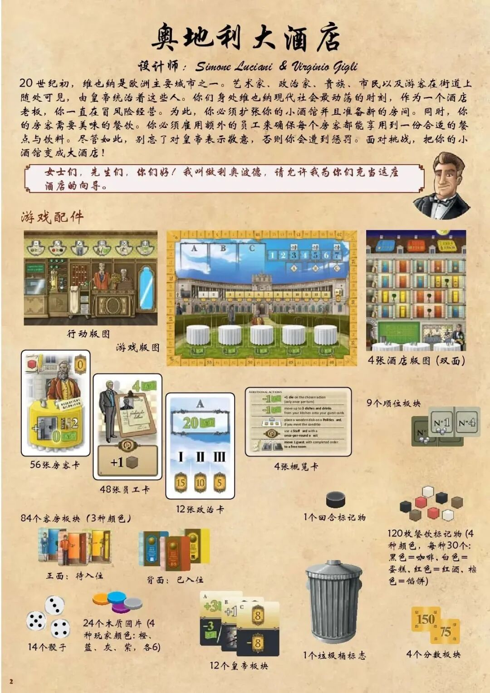
奥地利大酒店
设计师:Simone Luciani & Virginio Gigli
20 世纪初,维也纳是欧洲主要城市之一。艺术家、政治家、贵族、市民以及游客在街道上随处可见,由皇帝统治着这些人。你们身处维也纳现代社会最动荡的时刻,作为一个酒店老板,你一直在冒风险经营。为此,你必须扩张你的小酒馆并且准备新的房间。同时,你的房客需要美味的餐饮。你必须雇用额外的员工来确保每个房客都能享用到一份合适的餐点与饮料。尽管如此,别忘了对皇帝表示敬意,否则你会遭到惩罚。面对挑战,把你的小酒馆变成大酒店!
女士们,先生们,你们好!我叫做利奥波德,请允许我为你们充当这座酒店的向导。
游戏配件
行动版图
游戏版图
4张酒店版图(双面)
56张房客卡
48张员工卡
12张政治卡
4张概览卡
9个顺位板块
84个客房板块(3种颜色)
1个回合标记物
120枚餐饮标记物(4种颜色,每种30个:黑色=咖啡、白色=蛋糕、红色=红酒、棕色=馅饼)
正面:待入住
背面:已入住
14个骰子
24个木制圆片(4种玩家颜色:橙、蓝、灰、紫,各6)
12个皇帝板块
1个垃圾桶标志
4个分数板块
〔2〕
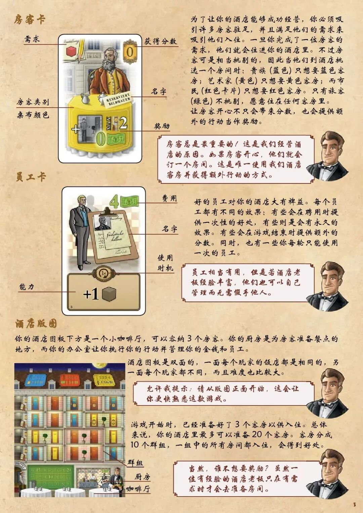
房客卡
需求
获得分数
名字
房客类别
桌布颜色
奖励
为了让你的酒店能够成功经营,你必须吸引许多房客驻足,并且满足他们的需求来吸引他们入住。一旦你完成了一位房客的需求,他们就会住进你的酒店里。不过房客可是相当挑剔的,因此当他们到酒店挑选一个房间时:贵族(蓝色)只想要蓝色客房;艺术家(黄色)只想要黄色客房;而市民(红色卡片)只想要红色客房。只有旅客(绿色)不挑剔,愿意住在任何客房里。让房客开心不只会带来分数,也会提供额外的行动当作奖励。
房客总是最重要的!这是我们经营酒店的原因。如果房客开心,他们就会订一个房间。这是唯一使用我们酒店客房并获得额外行动的方式。
员工卡
费用
名字
使用时机
能力
好的员工对你的酒店大有裨益。每个员工都有不同的效果:有些会在聘用时提供一次性的好处,有些则是会有永久的效果。有些会在游戏结束时提供额外的分数。同时,也有一些你每轮只能使用一次的员工。
员工相当有用,但是若酒店老板经验丰富,他们也可以自己管理而无需假手他人。
酒店版图
你的酒店图板下方是一个小咖啡厅,可以容纳 3 个房客。你的厨房是为房客准备餐点的地方,而你的办公室让你执行你的行动并管理你的金钱和员工。
酒店图板是双面的,一面每个玩家的饭店都是相同的,另一面每个玩家都不同,而且难度也比较大。
允许我提示:请从版图正面开始,这会让你更快熟悉这款游戏。
游戏开始时,已经准备好了 3 个客房以供入住。总体来说,你的酒店里最多可以准备 20 个客房。客房分成 10 个群组,一组中的所有房间都入住,会得到好处。
群组
厨房
咖啡厅
当然,谁不想要奖励?虽然一位有经验的酒店老板只在有需求时才会去准备房间。
〔3〕
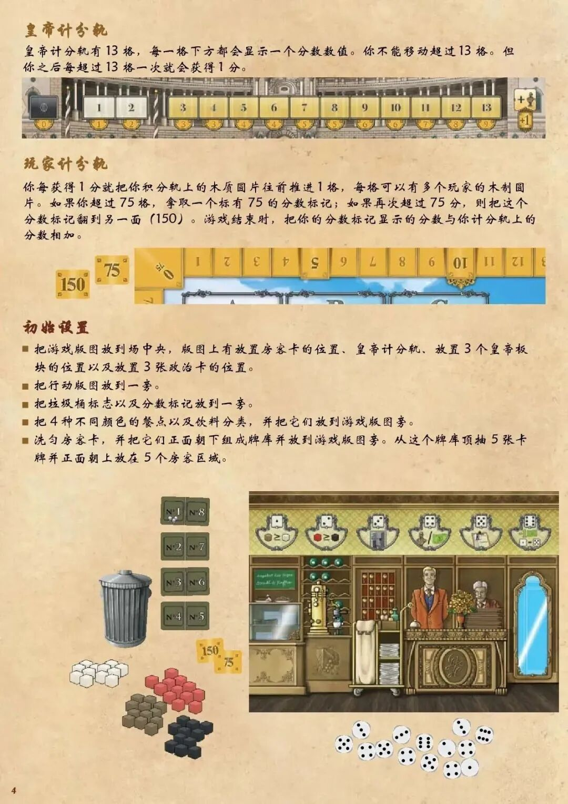
皇帝计分轨
皇帝计分轨有 13 格,每一格下方都会显示一个分数数值。你不能移动超过 13 格。但你之后每超过 13 格一次就会获得 1 分。
玩家计分轨
你每获得 1 分就把你积分轨上的木质圆片往前推进 1 格,每格可以有多个玩家的木制圆片。如果你超过 75 格,拿取一个标有 75 的分数标记;如果再次超过 75 分,则把这个分数标记翻到另一面(150)。游戏结束时,把你的分数标记显示的分数与你计分轨上的分数相加。
初始设置
- 把游戏版图放到场中央,版图上有放置房客卡的位置、皇帝计分轨、放置 3 个皇帝板块的位置以及放置 3 张政治卡的位置。
- 把行动版图放到一旁。
- 把垃圾桶标志以及分数标记放到一旁。
- 把 4 种不同颜色的餐点以及饮料分类,并把它们放到游戏版图旁。
- 洗匀房客卡,并把它们正面朝下组成牌库并放到游戏版图旁。从这个牌库顶抽 5 张卡牌并正面朝上放在 5 个房客区域。
〔4〕
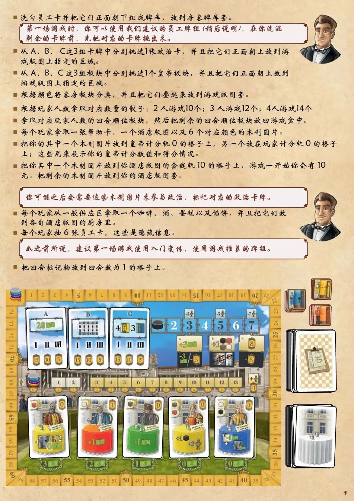
- 洗匀员工卡并把它们正面朝下组成牌库,放到房客牌库旁。
第一场游戏时,你可以使用我们建议的员工牌组(稍后说明),在你洗混剩余的卡牌前,先把对应的卡牌挑出来。
- 从 A、B、C 这3组卡牌中分别挑选1张政治卡,并且把它们正面朝上放到游戏版图上指定的区域。
- 从 A、B、C 这3组板块中分别挑选1个皇帝板块,并且把它们正面朝上放到游戏版图上指定的区域。
- 根据颜色将客房板块分类,并且把它们叠起来放到游戏版图旁。
- 根据玩家人数拿取对应数量的骰子:2 人游戏10个;3 人游戏12个;4人游戏14个
- 拿取对应玩家人数的回合顺位板块,然后把剩余的回合顺位板块放回游戏盒中。
- 每个玩家拿取一张帮助卡、一个酒店版图以及 6 个对应颜色的木制圆片。
- 把你的其中一个木制圆片放到皇帝计分轨 0 的格子上,另一个放在玩家计分轨 0 的格子上;这些用来展示你的皇帝计分数值和得分情况。
- 把你其中一个木制圆片放到你酒店版图的金钱轨 10 的格子上,游戏一开始你会有 10 元。把剩余的木制圆片放到你的酒店版图旁。
你可能之后会需要这些木制圆片来参与政治,标记对应的政治卡牌。
- 每个玩家从一般供应区拿取一个咖啡、酒、蛋糕以及馅饼,并且把它们放到各自酒店版图的厨房里。
- 每个玩家抽 6 张员工卡,这些是隐藏信息。
如之前所说,建议第一场游戏使用入门变体,使用游戏推荐的牌组。
- 把回合标记物放到回合数为 1 的格子上。
〔插图:游戏版图设置示意,图中无文字图注〕
〔5〕
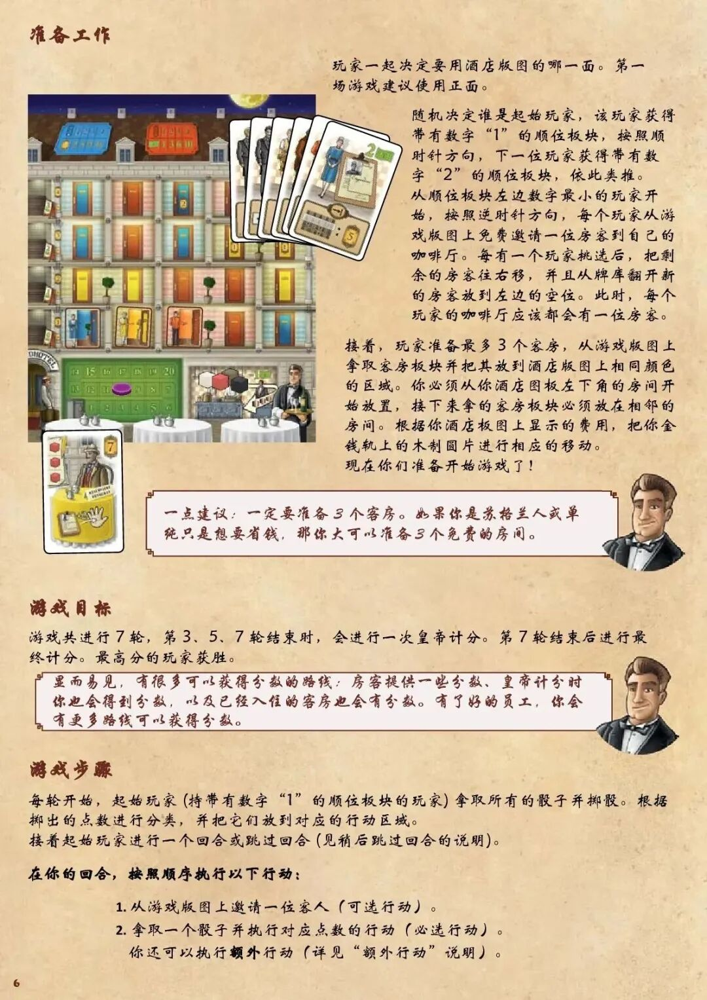
准备工作
玩家一起决定要用酒店版图的哪一面。第一场游戏建议使用正面。
随机决定谁是起始玩家,该玩家获得带有数字 "1" 的顺位板块,按照顺时针方向,下一位玩家获得带有数字 "2" 的顺位板块,依此类推。
从顺位板块左边数字最小的玩家开始,按照逆时针方向,每个玩家从游戏版图上免费邀请一位房客到自己的咖啡厅。每有一个玩家挑选后,把剩余的房客往右移,并且从牌库翻开新的房客放到左边的空位。此时,每个玩家的咖啡厅应该都会有一位房客。
接着,玩家准备最多 3 个客房,从游戏版图上拿取客房板块并把其放到酒店版图上相同颜色的区域。你必须从你酒店图板左下角的房间开始放置,接下来拿的客房板块必须放在相邻的房间。根据你酒店板图上显示的费用,把你金钱轨上的木制圆片进行相应的移动。
现在你们准备开始游戏了!
一点建议:一定要准备 3 个客房。如果你是苏格兰人或单纯只是想要省钱,那你大可以准备 3 个免费的房间。
游戏目标
游戏共进行 7 轮,第 3、5、7 轮结束时,会进行一次皇帝计分。第 7 轮结束后进行最终计分。最高分的玩家获胜。
显而易见,有很多可以获得分数的路线:房客提供一些分数、皇帝计分时你也会得到分数,以及已经入住的客房也会有分数。有了好的员工,你会有更多路线可以获得分数。
游戏步骤
每轮开始,起始玩家(持带有数字 "1" 的顺位板块的玩家)拿取所有的骰子并掷骰。根据掷出的点数进行分类,并把它们放到对应的行动区域。
接着起始玩家进行一个回合或跳过回合(见稍后跳过回合的说明)。
在你的回合,按照顺序执行以下行动:
1. 从游戏版图上邀请一位客人(可选行动)。
2. 拿取一个骰子并执行对应点数的行动(必选行动)。
你还可以执行额外行动(详见"额外行动"说明)。
〔6〕
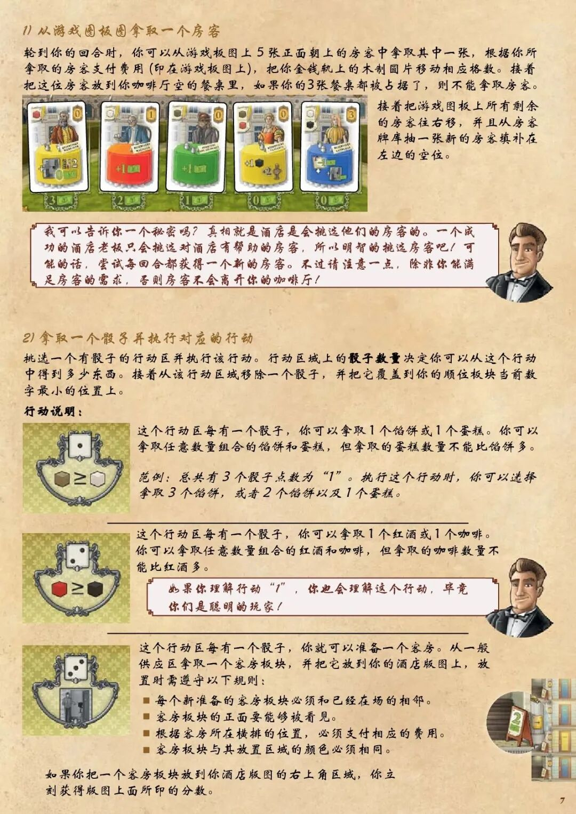
1) 从游戏图板图拿取一个房客
轮到你的回合时,你可以从游戏板图上5张正面朝上的房客中拿取其中一张,根据你所拿取的房客支付费用(印在游戏板图上),把你金钱轨上的木制圆片移动相应格数。接着把这位房客放到你咖啡厅空的餐桌里,如果你的3张餐桌都被占据了,则不能拿取房客。
接着把游戏图板上所有剩余的房客往右移,并且从房客牌库抽一张新的房客填补在左边的空位。
我可以告诉你一个秘密吗?真相就是酒店是会挑选他们的房客的。一个成功的酒店老板只会挑选对酒店有帮助的房客,所以明智的挑选房客吧!可能的话,尝试每回合都获得一个新的房客。不过请注意一点,除非你能满足房客的需求,否则房客不会离开你的咖啡厅!
2) 拿取一个骰子并执行对应的行动
挑选一个有骰子的行动区并执行该行动。行动区域上的骰子数量决定你可以从这个行动中得到多少东西。接着从该行动区域移除一个骰子,并把它覆盖到你的顺位板块当前数字最小的位置上。
行动说明:
这个行动区每有一个骰子,你可以拿取1个馅饼或1个蛋糕。你可以拿取任意数量组合的馅饼和蛋糕,但拿取的蛋糕数量不能比馅饼多。
范例:总共有3个骰子点数为"1"。执行这个行动时,你可以选择拿取3个馅饼,或者2个馅饼以及1个蛋糕。
这个行动区每有一个骰子,你可以拿取1个红酒或1个咖啡。你可以拿取任意数量组合的红酒和咖啡,但拿取的咖啡数量不能比红酒多。
如果你理解行动"1",你也会理解这个行动,毕竟你们是聪明的玩家!
这个行动区每有一个骰子,你就可以准备一个客房。从一般供应区拿取一个客房板块,并把它放到你的酒店版图上,放置时需遵守以下规则:
- 每个新准备的客房板块必须和已经在场的相邻。
- 客房板块的正面要能够被看见。
- 根据客房所在横排的位置,必须支付相应的费用。
- 客房板块与其放置区域的颜色必须相同。
如果你把一个客房板块放到你酒店版图的右上角区域,你立刻获得版图上面所印的分数。
〔7〕
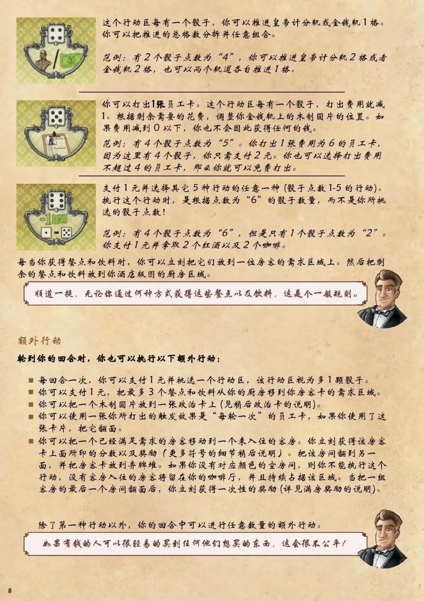
这个行动区每有一个骰子,你可以推进皇帝计分轨或金钱轨1格。你可以把推进的总格数拆分并任意组合。
范例:有2个骰子点数为"4",你可以推进皇帝计分轨2格或者金钱轨2格,也可以两个轨道各自推进1格。
你可以打出1张员工卡。这个行动区每有一个骰子,打出费用就减1。根据剩余需要的花费,调整你金钱轨上的木制圆片的位置。如果费用减到0以下,你也不会因此获得任何的钱。
范例:有4个骰子点数为"5"。你打出1张费用为6的员工卡,因为这里有4个骰子,你只需支付2元。你也可以选择打出费用不超过4的员工卡,那么你就可以免费打出。
支付1元并选择其它5种行动的任意一种(骰子点数1-5的行动)。执行这个行动时,是根据点数为"6"的骰子数量,而不是你所挑选的骰子点数!
范例:有4个骰子点数为"6",但是只有1个骰子点数为"2"。你支付1元并拿取2个红酒以及2个咖啡。
每当你获得餐点和饮料时,你可以立刻把它们放到一位房客的需求区域上。然后把剩余的餐点和饮料放到你酒店版图的厨房区域。
顺道一提,无论你通过何种方式获得这些餐点以及饮料,这是个一般规则。
额外行动
轮到你的回合时,你也可以执行以下额外行动:
- 每回合一次,你可以支付1元并挑选一个行动区,该行动区视为多1颗骰子。
- 你可以支付1元,把最多3个餐点和饮料从你的厨房移到你房客卡的需求区域。
- 你可以把一个木制圆片放到一张政治卡上(见稍后政治卡的说明)。
- 你可以使用一张你所打出的触发效果是"每轮一次"的员工卡,如果你使用了这张卡片,把它翻面。
- 你可以把一个已经满足需求的房客移动到一个未入住的客房。你立刻获得该房客卡上面所印的分数以及奖励(更多符号的细节稍后说明)。把该房间翻到另一面,并把房客卡放到弃牌堆。如果你没有对应颜色的空房间,则你不能执行这个行动,没有客房入住的房客将留在你的咖啡厅,并且持续占据该区域。当把一组客房的最后一个房间翻面后,你立刻获得一次性的奖励(详见满房奖励的说明)。
除了第一种行动以外,你的回合中可以进行任意数量的额外行动。
如果有钱的人可以很容易的买到任何他们想买的东西,这会很不公平!
〔8〕
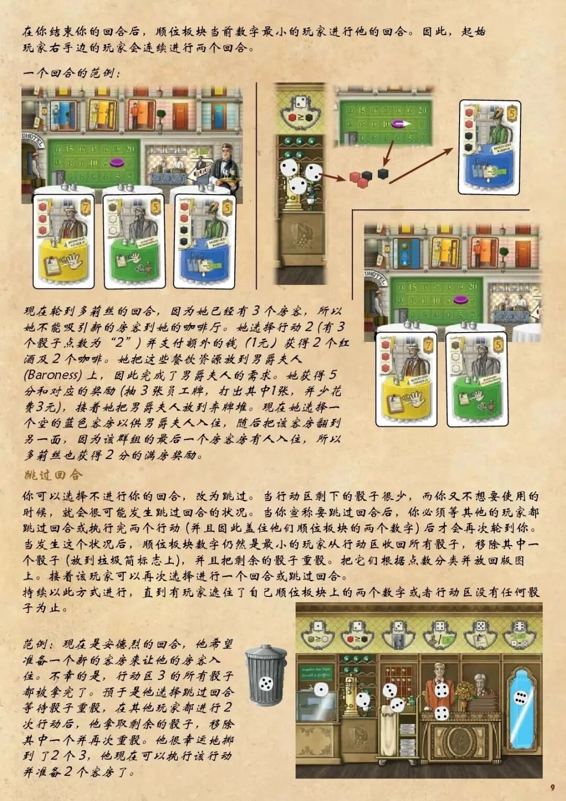
在你结束你的回合后，顺位板块当前数字最小的玩家进行他的回合。因此，起始玩家右手边的玩家会连续进行两个回合。
一个回合的范例：
现在轮到多莉丝的回合，因为她已经有 3 个房客，所以她不能吸引新的房客到她的咖啡厅。她选择行动 2（有 3 个骰子点数为"2"）并支付额外的钱（1 元）获得 2 个红酒及 2 个咖啡。她把这些餐饮资源放到男爵夫人（Baroness）上，因此完成了男爵夫人的需求。她获得 5 分和对应的奖励（抽 3 张员工牌，打出其中1张，并少花费 3 元）。接着她把男爵夫人放到弃牌堆。现在她选择一个空的蓝色客房以供男爵夫人入住，随后把该客房翻到另一面，因为该群组的最后一个房客房有人入住，所以多莉丝也获得 2 分的满房奖励。
跳过回合
你可以选择不进行你的回合，改为跳过。当行动区剩下的骰子很少，而你又不想要使用的时候，就会很可能发生跳过回合的状况。当你宣称要跳过回合后，你必须等其他的玩家都跳过回合或执行完两个行动（并且因此盖住他们顺位板块的两个数字）后才会再次轮到你。当发生这个状况后，顺位板块数字仍然是最小的玩家从行动区收回所有骰子，移除其中一个骰子（放到垃圾桶标志上），并且把剩余的骰子重骰。把它们根据点数分类并放回版图上。接着该玩家可以再次选择进行一个回合或跳过回合。
持续以此方式进行，直到有玩家遮住了自己顺位板块上的两个数字或者行动区没有任何骰子为止。
范例：现在是安德烈的回合，他希望准备一个新的客房来让他的房客入住。不幸的是，行动区 3 的所有骰子都被拿完了。预于是他选择跳过回合等待骰子重骰，在其他玩家都进行 2 次行动后，他拿取剩余的骰子，移除其中一个并再次重骰。他很幸运地掷到了 2 个 3，他现在可以执行该行动并准备 2 个客房了。
〔9〕
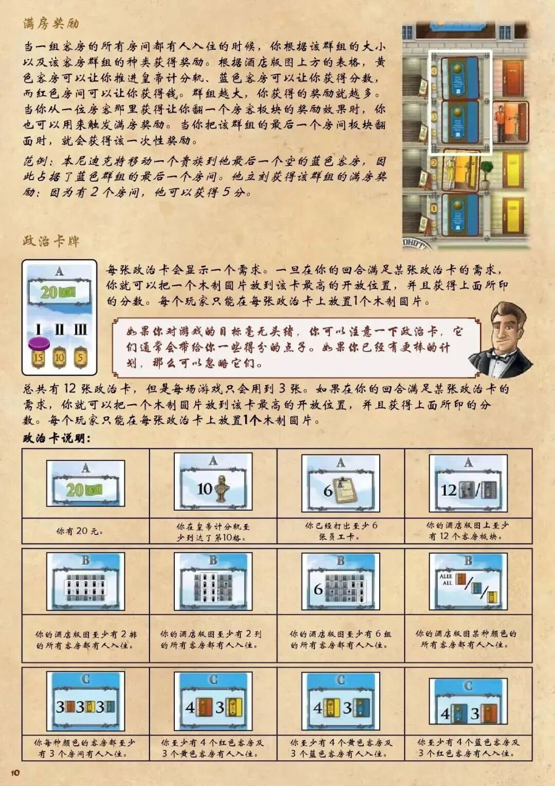
满房奖励
当一组客房的所有房间都有人入住的时候，你根据该群组的大小以及该客房群组的种类获得奖励。根据酒店版图上方的表格，黄色客房可以让你推进皇帝计分轨、蓝色客房可以让你获得分数，而红色房间可以让你获得钱。群组越大，你获得的奖励就越多。当你从一位房客那里获得让你翻一个客房板块的奖励效果时，你也可以用来触发满房奖励。当你把该群组的最后一个房间板块翻面时，就会获得该一次性奖励。
范例：本尼迪克特移动一个贵族到他最后一个空的蓝色客房，因此占据了蓝色群组的最后一个房间。他立刻获得该群组的满房奖励：因为有 2 个房间，他可以获得 5 分。
政治卡牌
每张政治卡会显示一个需求。一旦在你的回合满足某张政治卡的需求，你就可以把一个木制圆片放到该卡最高的开放位置，并且获得上面所印的分数。每个玩家只能在每张政治卡上放置1个木制圆片。
如果你对游戏的目标毫无头绪，你可以留意一下政治卡，它们通常会带给你一些得分的点子。如果你已经有更棒的计划，那么可以忽略它们。
总共有 12 张政治卡，但是每场游戏只会用到 3 张。如果在你的回合满足某张政治卡的需求，你就可以把一个木制圆片放到该卡最高的开放位置，并且获得上面所印的分数。每个玩家只能在每张政治卡上放置1个木制圆片。
政治卡说明：
| A 20<br>你有 20 元。 | A 10<br>你在皇帝计分轨至少到达了第10格。 | A 6<br>你已经打出至少 6 张员工卡。 | A 12<br>你的酒店版图上至少有 12 个客房板块。 |
| B<br>你的酒店版图至少有 2 排的所有客房都有人入住。 | B<br>你的酒店版图至少有 2 列的所有客房都有人入住。 | B 6<br>你的酒店版图至少有 6 组的所有客房都有人入住。 | B ALLE ALL<br>你的酒店版图某种颜色的所有客房都有人入住。 |
| C 3 3 3<br>你每种颜色的客房都至少有 3 个房间有人入住。 | C 4 3<br>你至少有 4 个红色客房及 3 个黄色客房有人入住。 | C 4 3<br>你至少有 4 个黄色客房及 3 个蓝色客房有人入住。 | C 4 3<br>你至少有 4 个蓝色客房及 3 个红色客房有人入住。 |
〔10〕
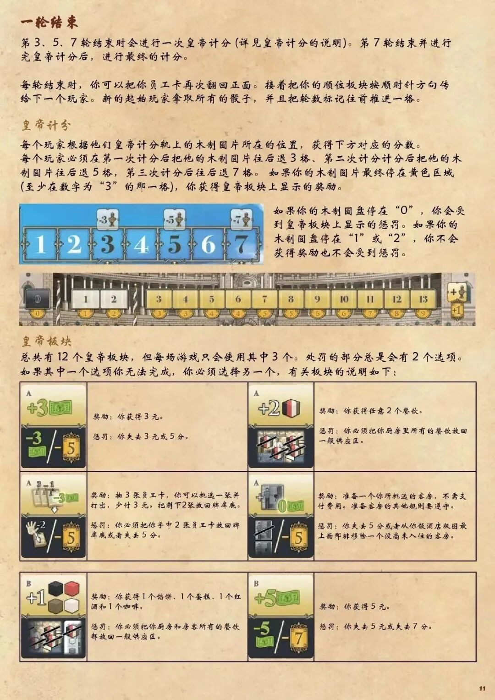
一轮结束
第3、5、7轮结束时也会进行一次皇帝计分(详见皇帝计分的说明)。第7轮结束并进行完皇帝计分后,进行最终的计分。
每轮结束时,你可以把你员工卡再次翻回正面。接着把你的顺位板块按顺时针方向传给下一个玩家。新的起始玩家拿取所有的骰子,并且把轮数标记往前推进一格。
皇帝计分
每个玩家根据他们皇帝计分轨上的木制圆片所在的位置,获得下方对应的分数。每个玩家必须在第一次计分后把他的木制圆片往后退3格、第二次计分计分后把他的木制圆片往后退5格,第三次计分后往后退7格。如果你的木制圆片最终停在黄色区域(至少在数字为“3”的那一格),你获得皇帝板块上显示的奖励。
插图(皇帝计分轨)标注:1、2、3、4、5、6、7;-3;-5;-7
如果你的木制圆盘停在“0”,你会受到皇帝板块上显示的惩罚。如果你的木制圆盘停在“1”或“2”,你不会获得奖励也不会受到惩罚。
插图(玩家计分轨)标注:0、1、2、3、4、5、6、7、8、9、10、11、12、13;右端:+、+1
皇帝板块
总共有12个皇帝板块,但每场游戏只会使用其中3个。处罚的部分总是会有2个选项。如果其中一个选项你无法完成,你必须选择另一个,有关板块的说明如下:
| 板块(图上标注) | 说明 |
| A(+3;-3 / -5) | 奖励:你获得3元。<br>惩罚:你失去3元或5分。 |
| A(+2) | 奖励:你获得任意2个餐饮。<br>惩罚:你必须把你厨房里所有的餐饮放回一般供应区。 |
| A(3-1;-3;-2 / -5) | 奖励:抽3张员工卡,你可以挑选一张并打出,少付3元。把剩下2张放回牌库底。<br>惩罚:你必须把你手中2张员工卡放回牌库底或者失去5分。 |
| A(0;-5) | 奖励:准备一个你所挑选的客房,不需支付费用。准备客房的其他规则要遵守。<br>惩罚:你失去5分或者从你饭店版图最上面那排移除一个没尚未入住的客房。 |
| B(+1) | 奖励:你获得1个馅饼、1个蛋糕、1个红酒和1个咖啡。<br>惩罚:你必须把你厨房和房客所有的餐饮都放回一般供应区。 |
| B(+5;-5 / -7) | 奖励:你获得5元。<br>惩罚:你失去5元或失去7分。 |
〔11〕
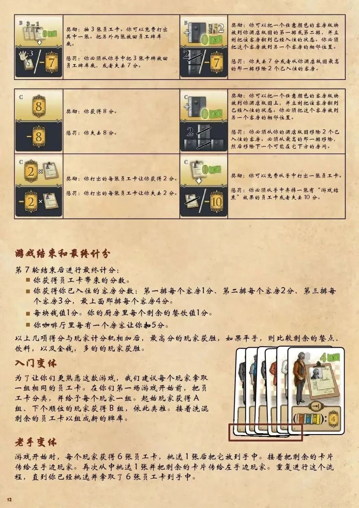
| 板块(图上标注) | 说明 |
| B(3-1;0;-3 / -7) | 奖励:抽3张员工卡。你可以免费打出其中一张。把另外两张放回员工牌库底。<br>惩罚:你必须从你手中把3张卡牌放回员工牌库底,或者失去7分。 |
| B(+、2;2 / -7) | 奖励:你可以把一个任意颜色的客房版块放到你酒店版图的第一排或第二排,并立刻把该客房翻到已经入住的状态。你必须把这个客房放到另一个客房的相邻位置。<br>惩罚:你失去7分或者从你酒店版图最高的那一排移除2个已入住的客房。 |
| C(8;-8) | 奖励:你获得8分。<br>惩罚:你失去8分。 |
| C(+、0;2) | 奖励:你可以把一个任意颜色的客房版块放到你酒店版图上,并立刻把该客房翻到已经入住的状态。你必须把这个客房放到另一个客房的相邻位置。<br>惩罚:你必须从你的酒店版图移除2个已入住的客房。必须从最高的那一排移除,然后移除下一个可能在它下方的房间。 |
| C(2;-2) | 奖励:你打出的每张员工卡让你获得2分。<br>惩罚:你打出的每张员工卡让你失去2分。 |
| C(0;-10) | 奖励:你可以免费从手中打出一张员工卡。<br>惩罚:你必须从手中弃掉一张有“游戏结束”效果的员工卡或者失去10分。 |
游戏结束和最终计分
第7轮结束后进行最终计分:
- 你获得员工卡带来的分数。
- 你获得你已入住的客房分数:第一排每个客房1分、第二排每个客房2分、第三排每个客房3分,最上面那排每个客房4分。
- 每块钱值1分。你的厨房里每个剩余的餐饮值1分。
- 你咖啡厅里每有一个房客让你扣5分。
以上几项得分与玩家计分轨相加后,最高分的玩家获胜,如果平手,则比较剩余的餐点、饮料,以及金钱,多的的玩家获胜。
入门变体
为了让你们更熟悉这款游戏,我们建议每个玩家拿取一组相同的员工卡。在你们第一场游戏开始前,把员工卡分类,并给予每个玩家一组。起始玩家获得A组、下个顺位的玩家获得B组,依此类推。接着洗混剩余的员工卡以组成新的牌库。
插图(员工卡)标注:4;〔?〕;4;A
老手变体
游戏开始时,每个玩家获得6张员工卡,挑选1张后把它放到手中。接着把剩余的卡片传给左手边玩家。再次从中挑选1张并把剩余的卡片传给左手边玩家。重复进行这个流程,直到你已经挑选并拿取了6张员工卡到手中。
〔12〕
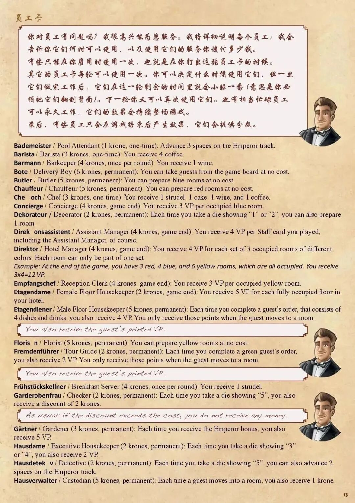
员工卡
你对员工有问题吗？我很高兴能为您服务。我将详细说明每个员工：我会告诉你它们何时可以使用，以及使用它们的服务你该付多少钱。
有些只能在你雇用时使用一次，也就是在你打出这张员工卡的时候。
其它的员工卡每轮可以使用一次。你可以决定什么时候使用它们，但一旦它们做完工作后，它们在这一轮剩余的时间里就会小睡一番（意思是你必须把它们翻到背面）。下一轮你又可以再次使用它们。也有相当忙碌员工可以永久工作，它们的效果会持续整场游戏。
最后，有些员工只会在游戏结束后产生效果，它们会提供分数。
Bademeister / Pool Attendant (1 krone, one-time): Advance 3 spaces on the Emperor track.
Barista / Barista (3 krones, one-time): You receive 4 coffee.
Barmann / Barkeeper (4 krones, once per round): You receive 1 wine.
Bote / Delivery Boy (6 krones, permanent): You can take guests from the game board at no cost.
Butler / Butler (5 krones, permanent): You can prepare blue rooms at no cost.
Chauffeur / Chauffeur (5 krones, permanent): You can prepare red rooms at no cost.
Che och / Chef (3 krones, one-time): You receive 1 strudel, 1 cake, 1 wine, and 1 coffee.
Concierge / Concierge (4 krones, game end): You receive 3 VP per occupied blue room.
Dekorateur / Decorator (2 krones, permanent): Each time you take a die showing “1” or “2”, you can also prepare 1 room.
Direk onsassistent / Assistant Manager (4 krones, game end): You receive 4 VP per Staff card you played, including the Assistant Manager, of course.
Direktor / Hotel Manager (4 krones, game end): You receive 4 VP for each set of 3 occupied rooms of different colors. Each room can only be part of one set.
Example: At the end of the game, you have 3 red, 4 blue, and 6 yellow rooms, which are all occupied. You receive 3x4=12 VP.
Empfangschef / Reception Clerk (4 krones, game end): You receive 3 VP per occupied yellow room.
Etagendame / Female Floor Housekeeper (2 krones, game end): You receive 5 VP for each fully occupied floor in your hotel.
Etagendiener / Male Floor Housekeeper (5 krones, permanent): Each time you complete a guest's order, that consists of 4 dishes and drinks, you also receive 4 VP. You only receive those points when the guest moves to a room.
You also receive the guest's printed VP.
Floris n / Florist (5 krones, permanent): You can prepare yellow rooms at no cost.
Fremdenführer / Tour Guide (2 krones, permanent): Each time you complete a green guest's order, you also receive 2 VP. You only receive those points when the guest moves to a room.
You also receive the guest's printed VP.
Frühstückskellner / Breakfast Server (4 krones, once per round): You receive 1 strudel.
Garderobenfrau / Checker (2 krones, permanent): Each time you take a die showing “5”, you also receive a discount of 2 krones.
As usual: if the discount exceeds the cost, you do not receive any money.
Gärtner / Gardener (3 krones, permanent): Each time you receive the Emperor bonus, you also receive 5 VP.
Hausdame / Executive Housekeeper (2 krones, permanent): Each time you take a die showing “3” or “4”, you also receive 2 VP.
Hausdetek v / Detective (2 krones, permanent): Each time you take a die showing “5”, you can also advance 2 spaces on the Emperor track.
Hausverwalter / Custodian (5 krones, permanent): Each time a guest moves into a room, you also receive 1 krone.
〔13〕
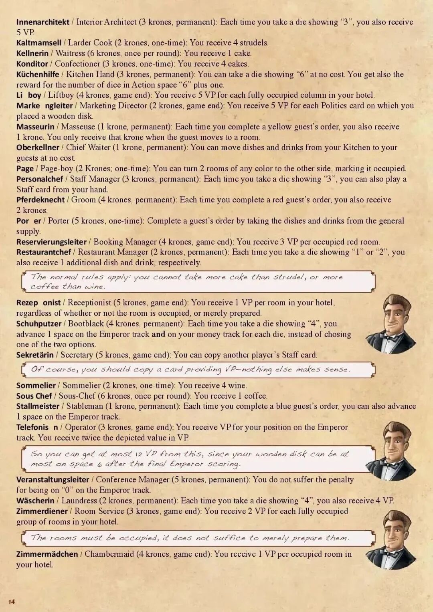
Innenarchitekt / Interior Architect (3 krones, permanent): Each time you take a die showing “3”, you also receive 5 VP.
Kaltmamsell / Larder Cook (2 krones, one-time): You receive 4 strudels.
Kellnerin / Waitress (6 krones, once per round): You receive 1 cake.
Konditor / Confectioner (3 krones, one-time): You receive 4 cakes.
Küchenhilfe / Kitchen Hand (3 krones, permanent): You can take a die showing “6” at no cost. You get also the reward for the number of dice in Action space “6” plus one.
Li boy / Liftboy (4 krones, game end): You receive 5 VP for each fully occupied column in your hotel.
Marke ngleiter / Marketing Director (2 krones, game end): You receive 5 VP for each Politics card on which you placed a wooden disk.
Masseurin / Masseuse (1 krone, permanent): Each time you complete a yellow guest's order, you also receive 1 krone. You only receive that krone when the guest moves to a room.
Oberkellner / Chief Waiter (1 krone, permanent): You can move dishes and drinks from your Kitchen to your guests at no cost.
Page / Page-boy (2 Krones; one-time): You can turn 2 rooms of any color to the other side, marking it occupied.
Personalchef / Staff Manager (3 krones, permanent): Each time you take a die showing “3”, you can also play a Staff card from your hand.
Pferdeknecht / Groom (4 krones, permanent): Each time you complete a red guest's order, you also receive 2 krones.
Por er / Porter (5 krones, one-time): Complete a guest's order by taking the dishes and drinks from the general supply.
Reservierungsleiter / Booking Manager (4 krones, game end): You receive 3 VP per occupied red room.
Restaurantchef / Restaurant Manager (2 krones, permanent): Each time you take a die showing “1” or “2”, you also receive 1 additional dish and drink, respectively.
The normal rules apply: you cannot take more cake than strudel, or more coffee than wine.
Rezep onist / Receptionist (5 krones, game end): You receive 1 VP per room in your hotel, regardless of whether or not the room is occupied, or merely prepared.
Schuhputzer / Bootblack (4 krones, permanent): Each time you take a die showing “4”, you advance 1 space on the Emperor track and on your money track for each die, instead of chosing one of the two options.
Sekretärin / Secretary (5 krones, game end): You can copy another player's Staff card.
Of course, you should copy a card providing VP–nothing else makes sense.
Sommelier / Sommelier (2 krones, one-time): You receive 4 wine.
Sous Chef / Sous-Chef (6 krones, once per round): You receive 1 coffee.
Stallmeister / Stableman (1 krone, permanent): Each time you complete a blue guest's order, you can also advance 1 space on the Emperor track.
Telefonis n / Operator (3 krones, game end): You receive VP for your position on the Emperor track. You receive twice the depicted value in VP
So you can get at most 12 VP from this, since your wooden disk can be at most on space 6 after the final Emperor scoring.
Veranstaltungsleiter / Conference Manager (5 krones, permanent): You do not suffer the penalty for being on “0” on the Emperor track.
Wäscherin / Laundress (2 krones, permanent): Each time you take a die showing “4”, you also receive 4 VP.
Zimmerdiener / Room Service (3 krones, game end): You receive 2 VP for each fully occupied group of rooms in your hotel.
The rooms must be occupied, it does not suffice to merely prepare them.
Zimmermädchen / Chambermaid (4 krones, game end): You receive 1 VP per occupied room in your hotel.
〔14〕
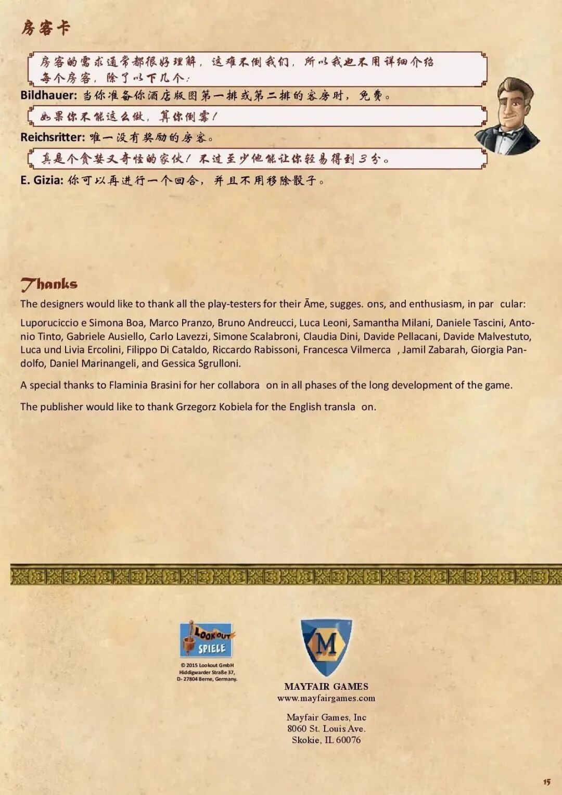
房客卡
房客的需求通常都很好理解,这难不倒我们,所以我也不用详细介绍每个房客,除了以下几个:
Bildhauer: 当你准备你酒店版图第一排或第二排的客房时,免费。
如果你不能这么做,算你倒霉!
Reichsritter: 唯一没有奖励的房客。
真是个贪婪又奇怪的家伙!不过至少他能让你轻易得到3分。
E. Gizia: 你可以再进行一个回合,并且不用移除骰子。
Thanks
The designers would like to thank all the play-testers for their Āme, sugges. ons, and enthusiasm, in par cular:
Luporuciccio e Simona Boa, Marco Pranzo, Bruno Andreucci, Luca Leoni, Samantha Milani, Daniele Tascini, Antonio Tinto, Gabriele Ausiello, Carlo Lavezzi, Simone Scalabroni, Claudia Dini, Davide Pellacani, Davide Malvestuto, Luca und Livia Ercolini, Filippo Di Cataldo, Riccardo Rabissoni, Francesca Vilmerca , Jamil Zabarah, Giorgia Pandolfo, Daniel Marinangeli, and Gessica Sgrulloni.
A special thanks to Flaminia Brasini for her collabora on in all phases of the long development of the game.
The publisher would like to thank Grzegorz Kobiela for the English transla on.
〔Lookout Spiele 标志〕
© 2015 Lookout GmbH
Hiddigwarder Straße 37,
D- 27804 Berne, Germany.
〔Mayfair Games 盾形 M 标志〕
MAYFAIR GAMES
www.mayfairgames.com
Mayfair Games, Inc
8060 St. Louis Ave.
Skokie, IL 60076
〔15〕
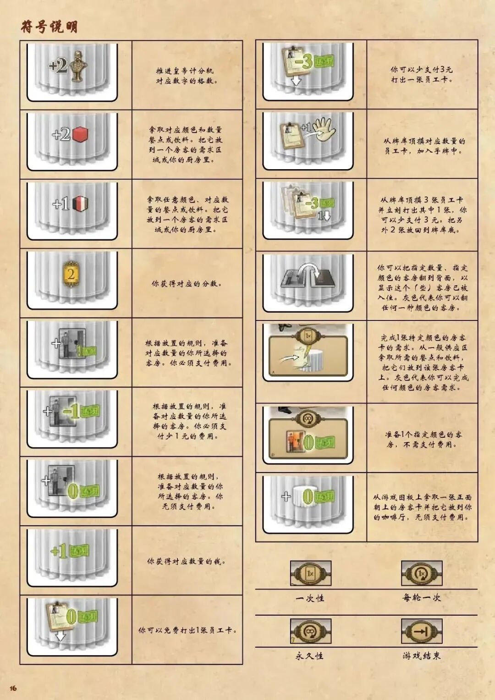
符号说明
〔左栏符号表,图内文字照录〕
| 图内文字 | 说明 |
| +2 | 推进皇帝计分轨对应数字的格数。 |
| +2 | 拿取对应颜色和数量餐点或饮料。把它放到一个房客的需求区域或你的厨房里。 |
| +1 | 拿取任意颜色、对应数量的餐点或饮料。把它放到一个房客的需求区域或你的厨房里。 |
| 2 | 你获得对应的分数。 |
| + 1x | 根据放置的规则,准备对应数量的你所选择的客房。你必须支付费用。 |
| + -1 | 根据放置的规则,准备对应数量的你所选择的客房。你必须支付少 1 元的费用。 |
| + 0 | 根据放置的规则,准备对应数量的你所选择的客房。你无须支付费用。 |
| +1 | 你获得对应数量的钱。 |
| 0 ↓ | 你可以免费打出1张员工卡。 |
〔右栏符号表,图内文字照录〕
| 图内文字 | 说明 |
| -3 ↓ | 你可以少支付3元打出一张员工卡。 |
| +1 | 从牌库顶摸对应数量的员工卡,加入手牌中。 |
| 3 ↓↓ | 从牌库顶摸 3 张员工卡并立刻打出其中 1 张,你可以少支付 3 元。把另外 2 张放回到牌库底。 |
| — | 你可以把指定数量、指定颜色的客房翻到背面,以显示这个(些)客房已被入住。灰色代表你可以翻任何一种颜色的客房。 |
| 1x | 完成1张特定颜色的房客卡的需求。从一般供应区拿取所需的餐点和饮料,把它们放到该张房客卡上。灰色代表你可以完成任何颜色的房客需求。 |
| 0 | 准备1个指定颜色的客房,不需支付费用。 |
| + 0 | 从游戏图板上拿取一张正面朝上的房客卡并把它放到你的咖啡厅,无须支付费用。 |
〔页底四个员工卡时限图标,图内文字照录〕
| 图内文字 | 标注 | |
| 1x | 一次性 | |
| 1x(环形箭头) | 每轮一次 | |
| ∞(环形箭头) | 永久性 | |
| →\ | 游戏结束 |
〔16〕
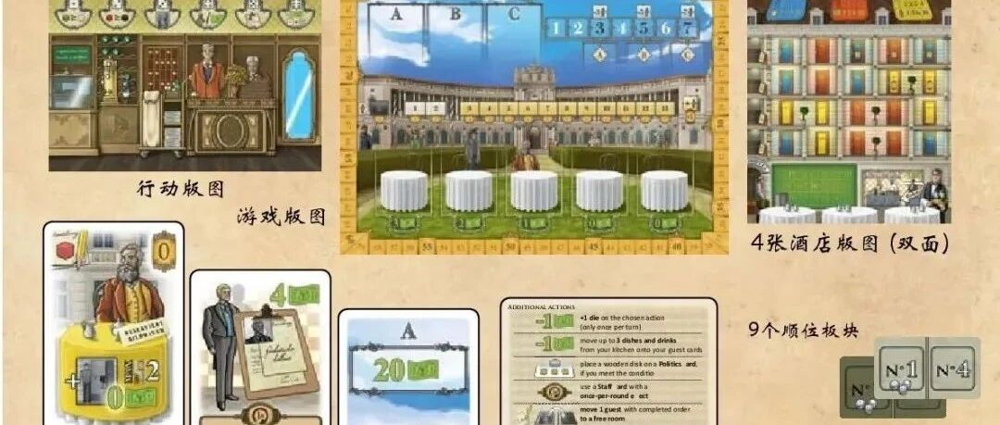
〔图:照片,展示立式配件(上部有拱形装饰与小图标一排,图案过小无法辨认)〕
行动版图
〔图:照片,展示大型版图(拱廊、草地、圆桌插画);版图上印有 A、B、C 等字母与数字小字,过小无法辨认〕
游戏版图
〔图:照片,展示多层酒店立面插画与绿色地毯区域;内含小字牌示,过小无法辨认〕
4张酒店版图 (双面)
〔图:黄色卡片照片,底部被扫描边缘裁切;卡片另印有红方块、铃铛等小图标〕
0
〔?……?〕(白色标签上两行英语小字,无法辨认)
+〔图:带框人物照片插画〕〔图标:竖排小字牌,文字无法辨认〕2
0〔图标:绿色纸币,币面小字无法辨认〕
〔图:宾客卡片照片,底部被扫描边缘裁切〕
4〔图标:绿色纸币,币面小字无法辨认〕
〔?……?〕(夹板上登记表:人物照片、手写签名及左侧数行印刷小字,均无法辨认)
〔图标:圆形徽章〕
〔图:云纹卡片照片,底部被扫描边缘裁切〕
A
20〔图标:绿色纸币〕
〔图:卡片照片〕
ADDITIONAL ACTIONS
| 〔图标:-1 与绿色纸币〕 | +1 die on the chosen action (only once per turn) |
| 〔图标:-1 与绿色纸币〕 | move up to 3 dishes and drinks from your kitchen onto your guest cards |
| 〔图标:白色桌台,上置三个小圆盘〕 | place a wooden disk on a Politics〔?〕ard, if you meet the conditio〔?〕 |
| 〔图标:圆形徽章〕 | use a Staff〔?〕ard with a once-per-round e〔?〕ect |
| 〔图标:模糊图案,底部被扫描边缘裁切〕 | move 1 guest with completed order to a free room |
9个顺位板块
〔图:顺位板块照片:前排两块浅色板块分别印 N°1、N°4,后面一块深色板块印 N°〔?〕;板块上放置小模型〕